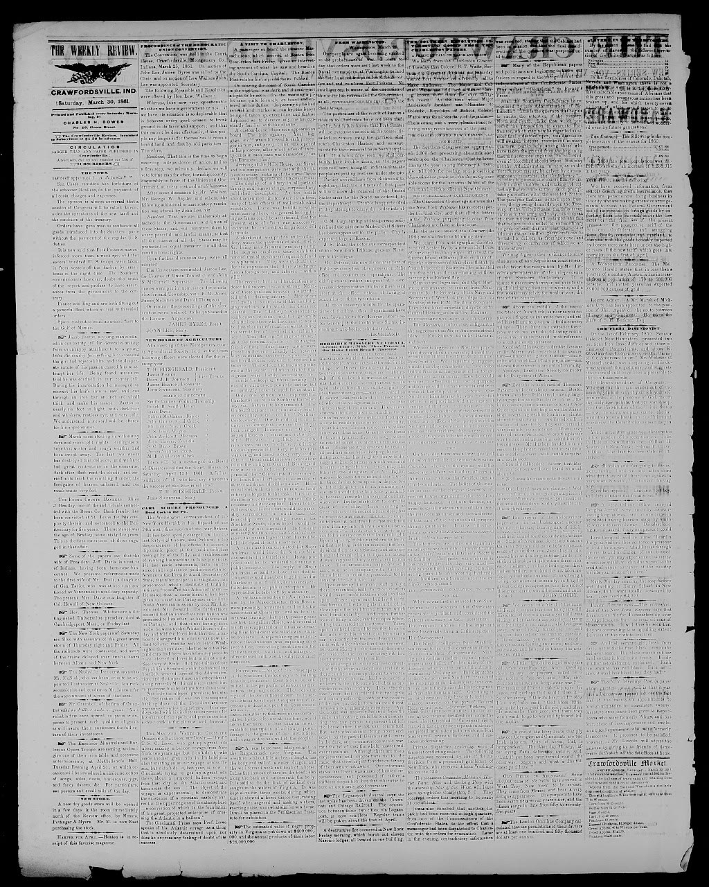

HN-188 · March 30, 1861 · Transportation & Maritime > Aviation & Aerospace Transportation > Early aviation
Source: Crawfordsville Review, p. 2 — original page.
Report: A short item ridiculed Professor Thaddeus S. C. Lowe for announcing ambitious balloon voyages, including a projected Atlantic crossing based on supposed upper-atmosphere winds, without yet completing them. It described a proposed flight from Cincinnati toward the coast as preparation.
Assessment: Contemporary skeptical commentary about a proposed experiment, not an accomplished ocean crossing. Compare his later military balloon reporting in HN-191 and public flight in HN-200. Follow-up partially present.
Authentic images retrieved from Hoosier State Chronicles (Indiana State Library). Article crops are located using the archive's own OCR word coordinates and rendered at native crop resolution; article clips are assembled from the archive's own article-block images; page images marked "archive tiles" are stitched from the archive's own tiled page service at its 256-px tile cap; page images marked "issue PDF" are single pages rasterised from the archive's own issue PDF, with the page chosen by matching the headline against the PDF's text layer; page scans are reduced-size access renditions. No images were generated, mocked, or retouched.

Status: Archive images acquired
Authentic archive-owned image renditions were retrieved for this record and are displayed above. The source-acquisition manifest preserves the original pre-acquisition feasibility assessment.
URL (preserved verbatim): https://newspapers.library.in.gov/?a=d&d=CVR18610330.1.2
Saved research report: Historical_Newspaper_Event_Research_178-202_2026-10-22.md
Evidence note: A newspaper report means a historical publication made a claim; it does not establish that claim as fact. Contemporary reporting is separated from later scholarly context and our own assessment.